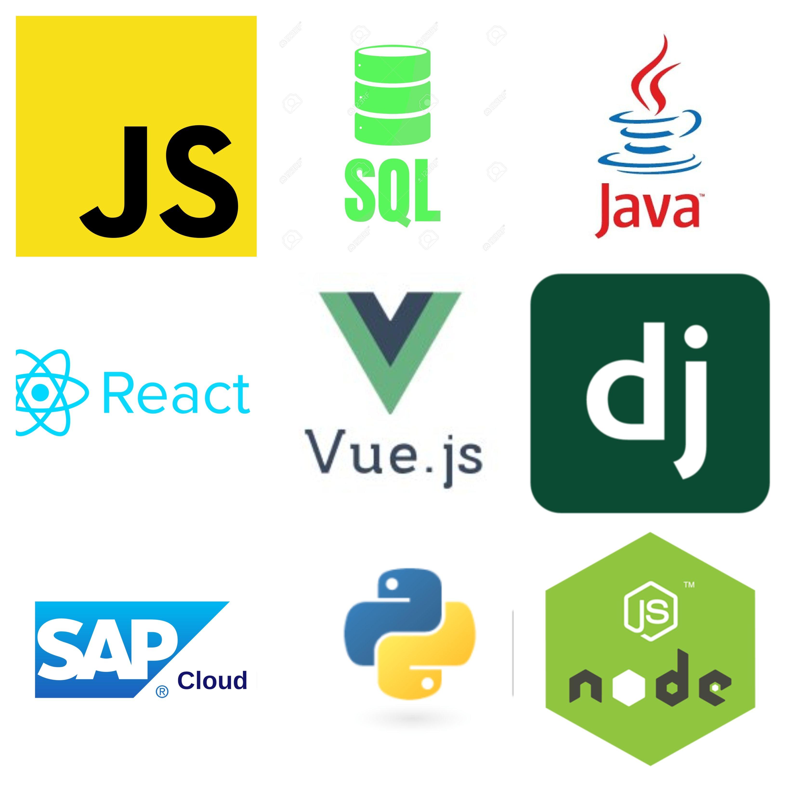

Durant tout mon parcours scolaire j'ai pu acquérir de nombreuses compétences en programmation web mais également en programmation côté backend. Aujourd'hui toutes ces compétences me permettent de me définir en tant que développeuse junior full-stack. Dans le cadre de la formation, j'ai eu l'occasion de réaliser de nombreux projets qui ont été très formateurs. Les projets du cours de web m'ont permis d'acquérir beaucoup de compétences dans les langages React, Javascript , Html et Css bien évidemment et dans plusieurs autres. Le projet le plus formateurs a été de réaliser en groupe un jeux de cartes et de super héros en ligne. Pour la partie backend, de nombreux projets ont été réalisés. A mon sens, le plus formateur a été la réalisation du projet tuteuré qui s'est déroulé durant toute l'année de L3. Durant ce projet j'ai eu l'occasion de pratiquer le langage python mais également de découvrir le framework de Python : Django qui est un framework pour faire du web avec Python. Nous n'avions pas eu de formation sur Django, cela a donc été pour moi l'occasion de m'auto former sur un nouveau framework. Ce fût un expérience très enrichissante. Aussi, dans le cadre de mon alternance au sein de l'entreprise Sopra Steria, je réalise des missions de développement. L'entreprise utilise un langage qui n'est pas enseigné à l'Université. Ils m'ont donc permis de me former et cette formation m'a donner l'opportunité de rajouter une corde à mon arc. J'espère pouvoir acquérir d'autres compétences dans le futur...